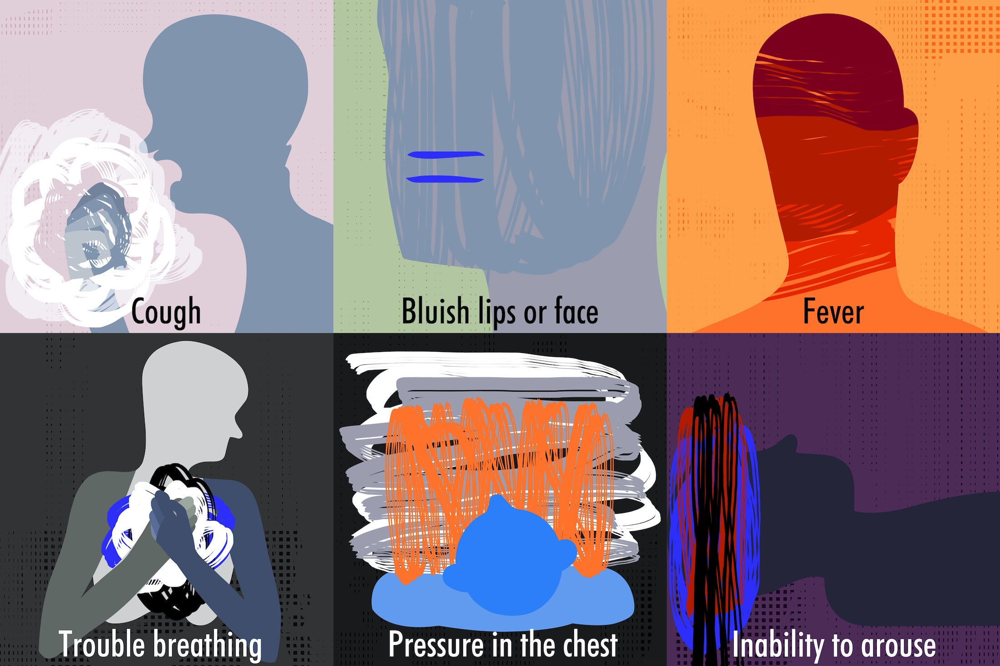

Coronavirus in the United States
COVID-19 is now the No. 3 cause of death in the United States, surpassing accidents, diabetes, Alzheimer's, and many more.
What is COVID-19?
From Centers for Disease Control and Prevention (CDC):
Coronaviruses are a large family of viruses found mostly in animals. In humans, they can cause diseases ranging from the common cold to more severe diseases such as Severe Acute Respiratory Syndrome (SARS) and Middle East Respiratory Syndrome (MERS). The disease caused by the new coronavirus has been named COVID-19.
While many of the characteristics of COVID-19 are still unknown, mild to severe illness has been reported for confirmed cases.
How does the virus spread?
The virus that causes COVID-19 is thought to spread mainly from person to person, mainly through respiratory droplets produced when an infected person coughs, sneezes, or talks. These droplets can land in the mouths or noses of people who are nearby or possibly be inhaled into the lungs. Spread is more likely when people are in close contact with one another (within about 6 feet).
Why it is important to wear a mask
To reduce the spread of COVID-19, CDC recommends that people wear masks in public settings when around people outside of their household, especially when other social distancing measures are difficult to maintain.
Masks may help prevent people who have COVID-19 from spreading the virus to others. Wearing a mask will help protect people around you, including those at higher risk of severe illness from COVID-19 and workers who frequently come into close contact with other people (e.g., in stores and restaurants). Masks are most likely to reduce the spread of COVID-19 when they are widely used by people in public settings. The spread of COVID-19 can be reduced when masks are used along with other preventive measures, including social distancing, frequent handwashing, and cleaning and disinfecting frequently touched surfaces.
The masks recommended here are not surgical masks or respirators. Currently, those are critical supplies that should be reserved for healthcare workers and other first responders. Masks are not personal protective equipment (PPE). They are not appropriate substitutes for PPE such as respirators (like N95 respirators) or medical facemasks (like surgical masks) in workplaces where respirators or facemasks are recommended or required to protect the wearer.
Total COVID-19 cases and deaths in the United States
The following charts show the latest numbers as of today. Data is pulled from The New York Times which is updated daily.
COVID-19 Map of cases in the U.S.
The map below shows a geographic distribution of reported cases in the United States. Hover over to see the number of cases for each state.
COVID-19 Deaths in the United States by state
The following line charts illustrate the latest COVID-19 deaths in each U.S. state, updated daily. Data is pulled from The New York Times.